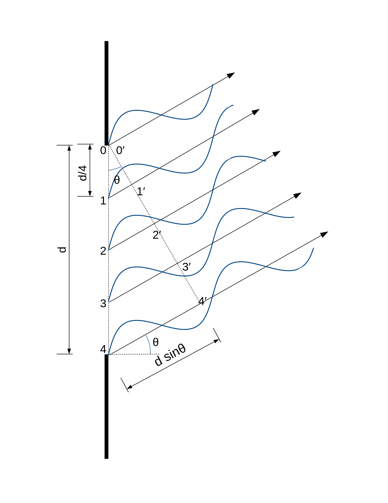
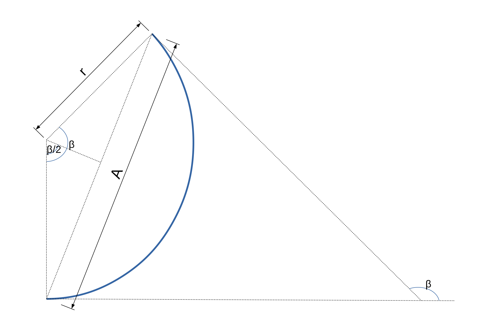
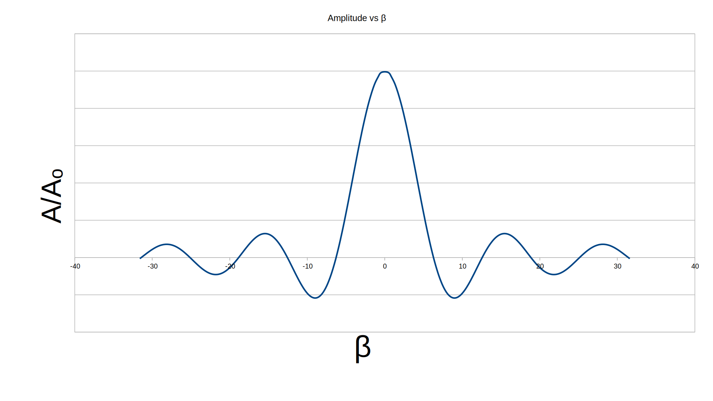
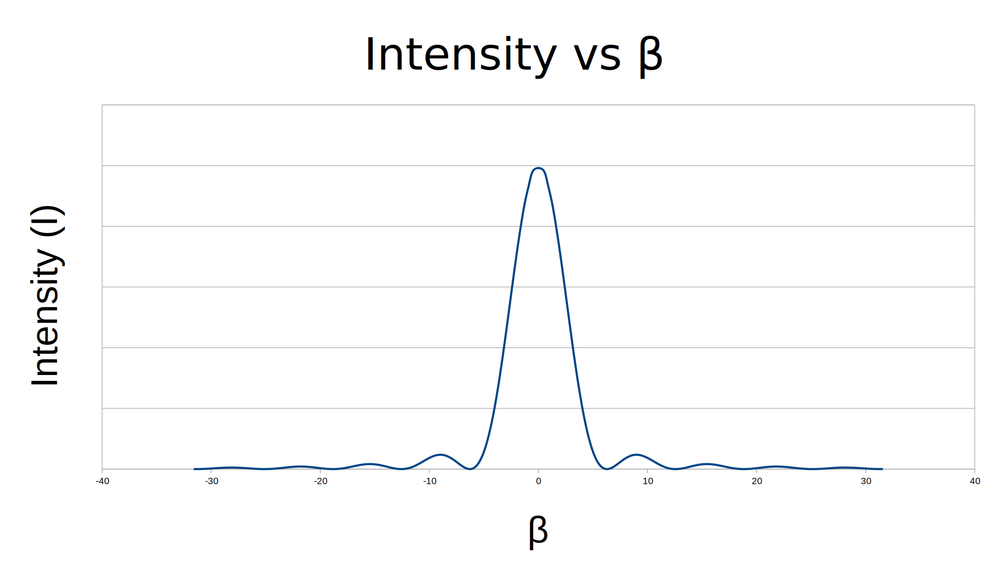

Single Slit Diffraction
Table of Contents
To find the actual/complete diffraction pattern we need to consider each point in the slit as a source of light and find the resultant amplitude (actually resultant electric field displacement) at the concerned point on the screen. This involves some interesting maths and logic. But before finding that infinte sum, lets look at a simplified finite case.

Here, we have shown only five points. Let each ray to inclined at \(\theta\)
angle and the slit width be \(d\). Suppose the electric displacement be
a, wavelength of light be \(\lambda\) and the angular
velocity be \(\omega\). As shown in the figure, after points
0′, 1′, 2′, 3′ & 4′ all the rays travel same distance upto the screen
placed at infinity. Thus their resultant at the screen is same as their
resultant at those points (i.e. the sum of the displacements at those
points). At the starting points 0, 1, 2, 3 & 4 on the slit each ray
can be represented by : \(y = a \sin(\omega t)\) but since the path
from original poisition to the primed (′) position is different for
different rays, and since they start at same phase, they are out of
phase when they reach the primed positions. The path difference between
cosecutive rays is \(\frac d 4 sin\theta = d′ \sin\theta\)
So corresponding phase diff is: \(\Delta \beta = d′ \sin\theta . \frac {2\pi} {\lambda}\) Thus now the rays can be represented at primed position as:
\begin{align} y_0 &= a \sin(\omega t) \\ y_1 &= a \sin(\omega t + \Delta \beta) \\ y_2 &= a \sin(\omega t + 2 \Delta \beta) \\ y_3 &= a \sin(\omega t + 3 \Delta \beta) \\ y_4 &= a \sin(\omega t + 4 \Delta \beta) \end{align}And the resultant is \(y = \sum_{i=0}^{i=4} {y_i}\)
Now, we just need to find the sum. Of course if we had actual data like,
θ = 30°, a = 10 A°, λ = 642nm, ... we could just put the values and
get the result :smiley: . But here we have to do this with all
variables. Also, if there were 2 or 3 terms only we could have expanded
the \(sin(\omega t + \Delta \beta)\) terms and got the sum (like in the
case of Young's double slit experiment's expressions). But, in this case
we have to later expand/generalize this to infinte terms as the segment
size goes to zero. So, we use a tool called phasor. I hope you are
familiar with it. If you aren't don't worry, the main thing about
phasors is that they represent expressions of the form
\(y = a \sin(\omega t)\) graphically. And their sums, for e.g. (1) can
also be represented graphically as :
(Here β = NΔβ where N = number of segments)
Figure 1: Phasor diagram
We might find a formula for the length of a diagonal joining N th sides (here 5th side)
of regular polygon whose each external angle is Δβ and sum of those
side is Na. Buts lets go to the real suff.
Figure 3: Phasor diagrams as number of imagined sections increase
Dividing the slit into very small equal segments of width \(\Delta d = \frac d N\). We get phase difference of \(\Delta \beta = \Delta d \sin\theta\) between rays of each segment. So, as \(N \rightarrow \infty Δd \rightarrow 0 \text{ and } a → 0\). The \((N + 1)\) sides of the polygon tends to a circular arc. As shown below :

Figure 4: Actual model
After all these conceptual talk, lets proceed to some small calculations. By geometry we can say,
\begin{align} \frac {A} 2 &= r sin(\frac \beta 2) & [\text{from triangle made by radius, half cord and normal}] \\ Also, \\ r \beta &= A_0 & [\text{by defination of circular measure}]\\ \therefore \frac A 2 &= \frac {A_0} \beta \sin(\frac {\beta } 2)\\ A &= A_0 \frac {\sin(\frac {\beta} 2)} {\frac {\beta} 2} \\ &= A_0 \frac {\sin(\frac {d \sin\theta} 2)} {\frac {d \sinθ} 2} \\ \end{align}Finally we know the amplitude/electric field displacement at the screen. Plotting this looks like:

Figure 5: Amplitude ratio vs β curve
Now, the intensity can be calculated as :
\begin{align} &\text{We know, } &I &\propto A^2 \\ &\text{So, intensity at the centre, θ=0 } &I_0 &\propto A_0^2 & \\ &\therefore &I &= I_0 \frac {A^2} {A_0^2} \\ & &I &= \frac {\sin²{\frac {β} {2}}} {(\frac β 2)^2} \\ \end{align}We can find the maxima and minima by differentiating intensity with respect to β and equating to zero, we get :
\begin{align} &1) & \sin{\frac β 2} &= 0 \\ & & \implies β &= 0 , 2π, 4π, 6π, ... \\ &2) & \frac β 2 &= \tan(\frac β 2) \\ \end{align}The first set of values represent minima (except central maxima β = 0), β = 2π is first minima, β = 4π is second minima and so on. A quick search at wolframalpha solves the second equation with following values
| β = | remark |
|---|---|
| 0 | Central Maxima |
| ±8.9868 ~ 3π (-4.6%) | 1st Secondary Maxima |
| ±15.4505 ~ 5π (-1.6%) | 2nd Secondary Maxima |
| ±21.8082 ~ 7π (-0.8%) | 3rd Secondayr Maxima |
These values for maxima, get nearer to odd multiples of π for higher order minimas.
I would like to conclude this with the following graph:

Figure 6: Intensity vs β curve
1. Footnote
1.1. Amplitude a
Each section consists of many rays, while taking a single ray passing through that slit, the amplitude of the rays is representative of all the rays. By this I mean that the amplitude is taken such that the intensity or the energy passing through that whole section due to many rays, is equal to the the intensity of the single ray.
1.2. Not odd half-integer wavelength ?
Some of you might be wondering, when the path difference between topmost
ray and bottom most ray was integer multiple of wavelength nλ, then
minima occured as all the displacements got cancled out (which we
observed (will observe in the future) by dividing the slit to 2N
parts). Then by similar logic, when the path difference is odd
half-integer multiple of wavelength (n+1)λ/2 we divide the slit to
n+1 section, then shouldn't all the rays from n sections
destructively superimpose (cancle out) and the rays from remaining
section give rise to bright maxima?
No, because although the rays from the remaining section superimpose constructively, the section itself is smaller. Actually there needs a balance between the constructive superimposition and the section size.
Figure 7: Phasor diagram when ray angle θ increase causing β to change
In this figure, the dashed line indicates the resultant (or say the intensity) and as we can see, the radius is always decreasing with increasing β and when one circle completes the 1st minima occurs but the 1st secondary maxima doesn't occur when the arc completes another half round. Because interestingly the diagonal (at β=540°) is shorter than the cord (at β=515°=8.98) because the radius is always decreasing.